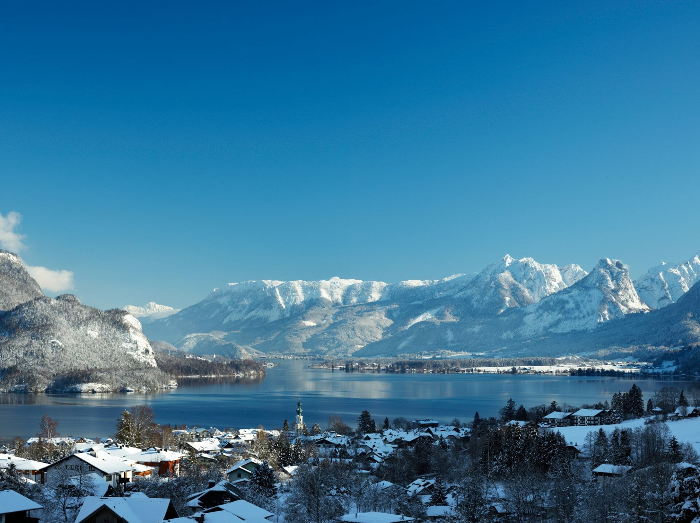
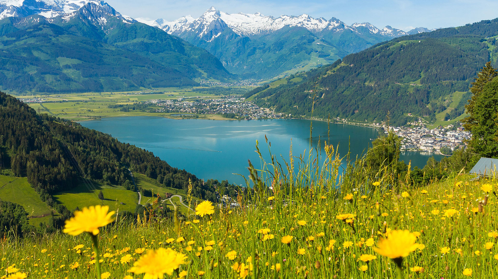
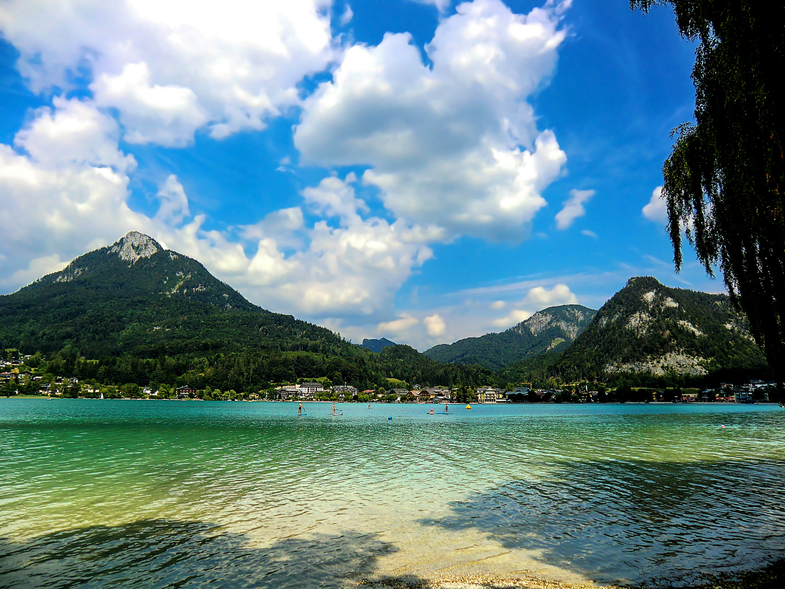

Wolfgangsee
Fläche: ca. 2,6 km²
Details: Einer der bekanntesten Seen in Salzburg, eingebettet zwischen
den Orten St. Gilgen, St. Wolfgang und Strobl. Sehr beliebt bei Wanderern, Radfahrern und Schwimmern.
Der Wolfgangsee ist ein malerischer Alpensee im Salzkammergut,
der sich über die Bundesländer Salzburg und Oberösterreich erstreckt.
Mit einer Fläche von etwa 13 km² und einer maximalen Tiefe von 114 Metern
zählt er zu den größten und tiefsten Seen der Region. Umrahmt von den beeindruckenden
Salzkammergut-Bergen, darunter der Schafberg mit 1.783 Metern Höhe, bietet
der See eine Vielzahl von Freizeitmöglichkeiten.
Strandbäder und Badeplätze am Wolfgangsee
- Badewiese Sonnplatz: Direkt an der Mondseestraße in St. Gilgen gelegen, bietet dieser Platz eine ruhige Wiese zum Sonnenbaden sowie einen Steg, der ins Wasser führt.
- Naturbadestrand Bacheck-Abersee: In St. Gilgen, an der Mündung des Zinkenbachs, befindet sich dieser naturbelassene Strand. Bitte beachten Sie, dass hier keine sanitären Anlagen vorhanden sind und Hunde nicht erlaubt sind.
- Waldbad Fürberg: Dieses Waldbad in St. Gilgen bietet eine atemberaubende Aussicht auf den See und die umliegenden Berge. Es gibt einen kleinen Kiosk, und Hunde sind an der Leine erlaubt. Der Eintritt ist für Erwachsene kostenpflichtig; Kinder bis 8 Jahre haben freien Zugang.
- Badeplatz Franzosenschanze: Beliebt bei Tauchern, bietet dieser Platz schattige Bereiche zum Sitzen und Liegen. Der Zugang zum Wasser erfolgt über eine steile Treppe; die Steine können rutschig sein. Hunde sind hier erlaubt.
- Badeplatz Information Ried: Ein gepflegter Badeplatz mit freier Liegewiese in der Ortschaft Ried.
- Naturstrand Wasswiese: In Strobl gelegen, bietet dieser Platz eine Liegewiese unter Bäumen, einen Badesteg, einen Spielplatz, ein Buffet und Bootsvermietung.
- Strandbad St. Gilgen: Eine weitläufige Grünanlage mit Umkleidekabinen, einem Badebereich für Kinder und einem Restaurant.

Zeller See
Fläche: ca. 4,7 km²
Details: Ein wunderschöner See im Salzburger Land, umgeben von den Alpen und der Stadt Zell am See.
Ideal für Wassersportarten und Bootsfahrten.
Der Zeller See, eingebettet in die malerische Landschaft
von Zell am See im Salzburger Land, ist ein beliebtes Ziel
für Wassersportler und Erholungssuchende. Mit einer Fläche
von etwa 4,5km² und einer maximalen Tiefe von 68Metern bietet
der See ideale Bedingungen für verschiedene Aktivitäten.
Öffentliche Badeplätze und Strandbäder am Zeller See
-
Badeplatz Wieshof:
Gegenüber dem Gasthof Wieshof gelegen, bietet dieser
großzügige Platz schattenspendende Bäume, eine Sandkiste,
einen Kinderspielplatz sowie Umkleidekabinen und WCs.
-
Badeplatz Erlberg: Beim "Haus Gabi"
befindet sich dieser Badeplatz mit Liegewiese, Kinderspielplatz,
Beachvolleyballfeld, Tischtennis und Tretboot-Verleih. Der flache
Wasserzugang ist ideal für Kinder.
-
Strandbad Zell am See: Dieses Strandbad
verfügt über eine Liegewiese, einen Sprungturm, eine Rutsche, einen Pool,
Schwallbrausen, einen Wasserpilz und ein Kinderbecken.
Zudem werden Wasserski, Fun-Reifen und Bananenfahrten angeboten.
-
Strandbad Thumersbach: Eingebettet in
eine idyllische Parkanlage, bietet dieses Naturbad einen beheizten
Pool, Wasserskischule, Bootsverleih, Parasailing und Boccia. Der
Beachclub Thumersbach sorgt für kulinarische Verpflegung.
-
Strandbad Seespitz: Dieses Strandbad
ist der Startpunkt für den Schwimmbewerb beim IRONMAN 70.3 Zell am See-Kaprun
und bietet zwei breite Holzstege, die weit ins Wasser ragen und zum Sprung ins kühle Nass einladen.

Fuschlsee
Fläche: ca. 2,6 km²
Details: Ein klarer, idyllischer See in der Nähe von Salzburg, umgeben von Wäldern und Bergen.
Besonders bekannt für seine ruhige Atmosphäre und als Naturparadies.
Der Fuschlsee, eingebettet in die malerische Landschaft
des Salzkammerguts, ist ein beliebtes Ziel für Erholungssuchende
und Wassersportler. Mit einer Fläche von etwa 2,7km² und einer
maximalen Tiefe von 69 Metern bietet der See ideale Bedingungen
für verschiedene Aktivitäten.
Öffentliche Badeplätze und Strandbäder am Fuschlsee
-
Naturbadestrand Hof bei Salzburg: Dieser Strand
befindet sich am Nordufer des Fuschlsees und bietet eine großzügige
Liegewiese sowie einen direkten Zugang zum See.
-
Fuschlseebad: Direkt in Fuschl am See
gelegen, bietet dieses Strandbad eine Liegewiese, einen
Sprungturm, eine Rutsche, einen Pool, Schwallbrausen, einen
Wasserpilz und ein Kinderbecken. Zudem werden Wasserski,
Fun-Reifen und Bananenfahrten angeboten.
-
Strandbad Thalgauberg: Dieses Strandbad am
Südufer des Fuschlsees bietet eine Liegewiese, einen Sprungturm,
eine Rutsche, einen Pool, Schwallbrausen, einen Wasserpilz und ein
Kinderbecken. Zudem werden Wasserski, Fun-Reifen und Bananenfahrten angeboten.
